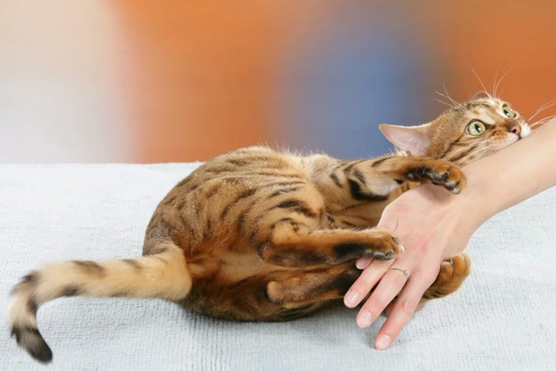

Як перемогти кота, коли він атакує задніми лапами?
Крок 1: Підготовка до бою
- Будь готовий до всього: Котики — це не просто милі пухнастики, це справжні бойці, які тренуються на кожному кроці. Ніколи не підходь до кота з думкою, що ти просто зараз погладиш його животик. Цей момент має бути стратегічно спланованим.
- Підготуй свої руки: Якщо ти не готовий до ударів, то не лізь на поле бою! Спокійно підходь, тримаючи руки в готовності до оборони.
Крок 2: Як розпізнати момент атаки
- Кіт на спині — здається, що він довіряє тобі і хоче ласки. Це не пастка, це чистий план! Виглядає безпечно, але тільки доки не зробиш перший рух!
- Дивись за очима кота — якщо котик дивиться на тебе з підозрою, навіть коли він лежить на спині, значить, він вже готовий до бою!
Крок 3: Твій перший рух
- Підходь до кота обережно. Спочатку доторкнися до його боків або груди, щоб оцінити, як він реагує. Якщо він починає відсувати задні лапи, це вже знак — він готуватиметься до атаки.
- Як тільки ти торкаєшся до живота котика, він миттєво активує бойовий режим і починає жбурляти лапами в усі боки.
Крок 4: Атака задніми лапами!
- Кіт вистрілює задніми лапами, і твоїм завданням є уникнути удару. Врахуй, що коти дуже швидко переміщують свої лапи, і вони можуть влучити тобі прямо в обличчя або живіт. Це, безумовно, найнебезпечніший момент.
- Якщо ти хочеш спіймати його лапи, потрібно діяти миттєво: відскочити вбік, тримаючи руку наготові для другої спроби.
Крок 5: Контратака
- Як тільки кіт витратив свої задні лапи на перший удар, він на мить зробить паузу. В цей момент ти можеш швидко увійти в атаку!
- Ласка (але обережна!) знову повертається в гру. Погладь кота по спині або за вухом, щоб його заспокоїти, але будь готовий до повторної атаки в будь-яку хвилину.
Крок 6: Фінішна атака кота
- Якщо ти не зміг уникнути попередніх атак, кіт підготував для тебе заключний удар задніми лапами, який може бути потужним і точним. Він як шкільний боксёр — навіть якщо ти не бачиш, він може вдарити тебе в найлегший момент.
- В останньому кроці ти повинен зійти з поля бою. Якщо ти встиг відскочити, то ймовірно, переміг. Інакше котик «здобуде тобі перемогу» своїми задніми лапами і знову повернеться до свого життя божества котів.
Висновок
- Перемогти кота, коли він атакує задніми лапами — це майже неможливо. Але, якщо ти вчасно визнаєш його перевагу і втікаєш, ти все ж таки станеш героєм цієї битви.
- Запам’ятай головне правило: коти ніколи не забувають твоїх поразок. Як би ти не намагався, кожна твоя спроба погладити його животик, стане частиною його каталогу технік задніми лапами!
І так, коти виграють бій. І ти — просто їх жертва. Але не засмучуйся, ти все одно отримав боєвий досвід!